event -2017
One’s Way –それぞれのあたりまえ–終了のご案内
10回を数えるOne’s Way –それぞれのあたりまえ–のイベントは、2017年11月をもちまして、一旦終了したしました。これまでお越し頂いた皆さま、ご協力いただいた方々に心よりお礼申し上げます。
充電期間をいただいたのちに形を変えて再開の予定です。進化したOne’s Wayで皆さまにお会いできる日を楽しみにしています。
イベントの再開についてはこちらをご覧ください。
- 2017秋

- 2017春

- 2016秋
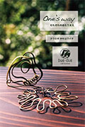
- 2016春
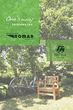
- 2015秋
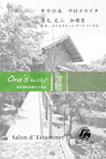
- 2015春
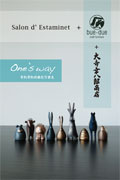
- 2014秋
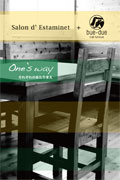
- 2014春
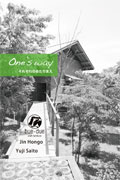
- 2013秋
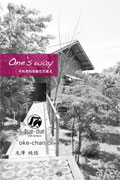
- 2013春
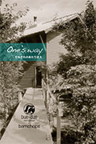
One’s Way –それぞれのあたりまえ–2017秋
10:00～18:00 & 10:00～16:00
「One’s Way 10th」
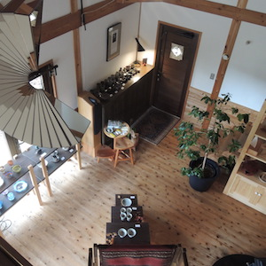
10回目の開催。イエルバスさんに作っていただいたOne's Way- それぞれのあたりまえ -2017秋オリジナルアロマの香りに包まれながら、bue-dueの家具と木製小物のほか、これまでのメモリアルな作品の数々をご覧頂きました。
また、サロンドエスタミネさんの黒イチジクのパウンドケーキとみどり共同購入会で扱っていらっしゃるフェアトレードコーヒーも楽しんでいただきました。
【協力】bam chops（雑貨）・イエルバス（アロマ）・光澤純慎（ギター演奏）・ Jin Hongo（ガラスアート）・Yuji Saito（ガラス食器）・Salon'd Estaminet（フランス料理）・大寺幸八郎商店（高岡銅器）・中村ヨウイチ（アクセサリー）・濱元丈二（唐津焼）・ROMAN（自転車）
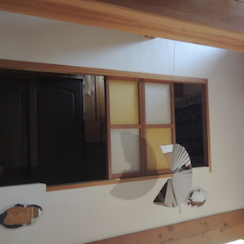
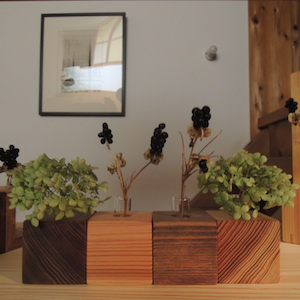
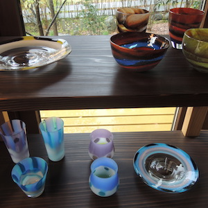
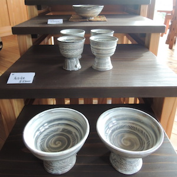
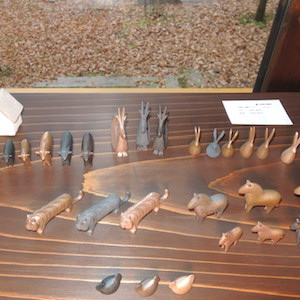
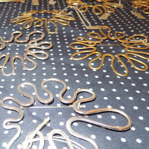
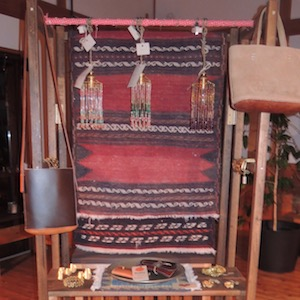
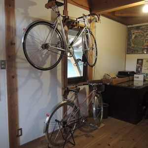
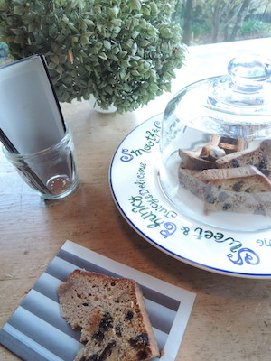
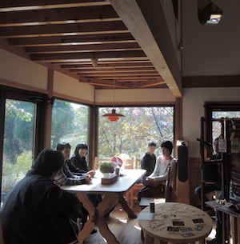
お越しいただいた方に、bue-due製作のウッドストラップをお持ち帰りいただきました。
今回はbue-dueさんのロゴ入り、色違いの木材の順番とストラップの色の違いで４種類ありました。お気づきになりましたか？
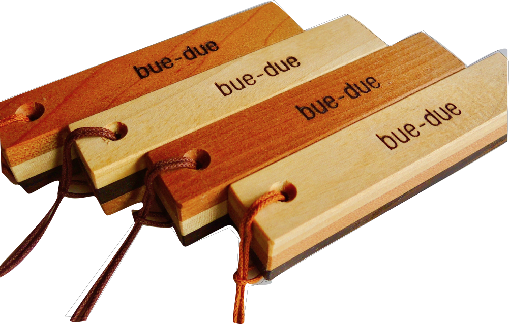
お越しいただいたみなさま、ありがとうございました。
ブログ とYouTube
とYouTube でもイベントの様子をご覧頂けます。こちらの記事
でもイベントの様子をご覧頂けます。こちらの記事 と動画
と動画 もご覧ください。
もご覧ください。
なお、ご協力いただいた方々についての詳細はrecommendでどうぞ。
One’s Way –それぞれのあたりまえ–2017春
10:00～18:00 & 10:00～16:00
「One’s Wayセレクション」
bue-dueの家具と木製品、みどり共同購入会の生活雑貨、People Treeの食品や衣料など、One’s wayの暮らしの楽しみを紹介しました。
自家製ケーキ４種類を準備し、ご来場いただいた方にはみどり共同購入会のコーヒーを楽しんでいただきました。
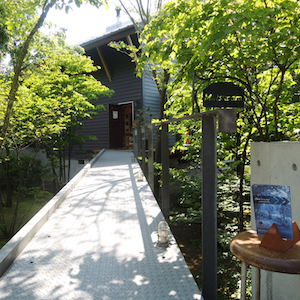
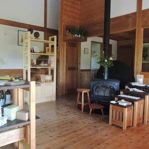
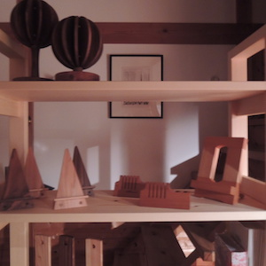
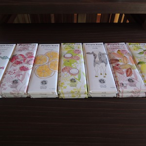
お越しいただいた方に、bue-due製作のウッドストラップをお持ち帰りいただきました。
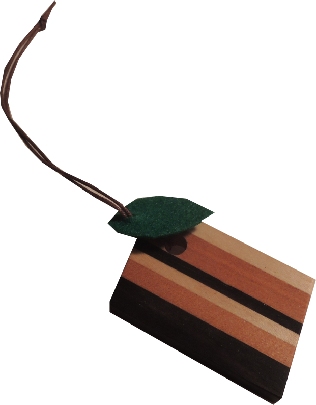
One’s Way –それぞれのあたりまえ–2016秋
10:00～18:00 & 10:00～16:00
「ふたりの中村さん」
奈良県を拠点に活躍中のタウの木 中村ヨウイチさんのアクセアサリーと、桐谷（富山市八尾町）で家具製作に携わるbue-due 中村和生さんの作品をご覧いただきました。また、エスタミネ特製の国吉（高岡市）の林檎を用いたパウンドケーキを準備し、コーヒーと一緒に楽しみました。
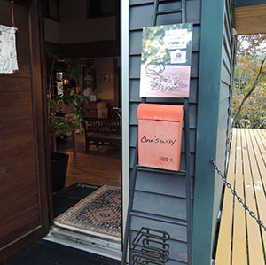
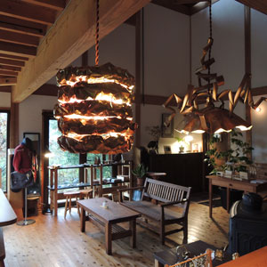
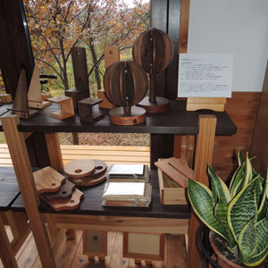
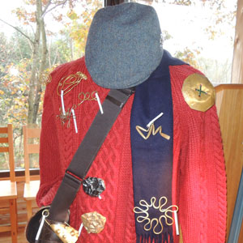
お越しいただいた方に、bue-due製作のウッドストラップをお持ち帰りいただきました。
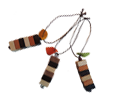
One’s Way –それぞれのあたりまえ–2016春
10:00～18:00 & 10:00～16:00
「オーダーメードのある暮らし」
bue-dueの家具とROMANの自転車をメインにオーダーメードの数々をご覧いただきました。また、エスタミネ特製のパンを準備し、コーヒー・リンゴジュース・ハーブティなど好みの飲み物で楽しみました。
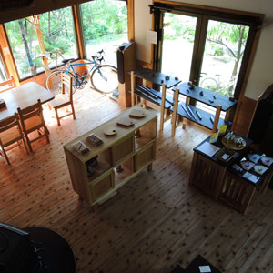
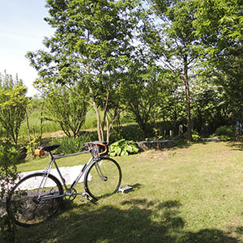
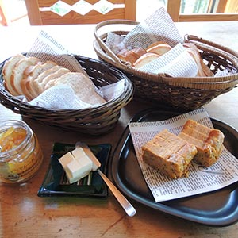
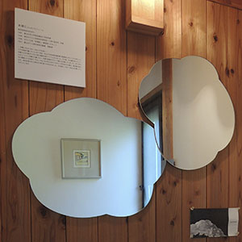
参考資料1：One’s Way –それぞれのあたりまえ–「オーダーメードのある暮らし」[pdf‚5.88MB]
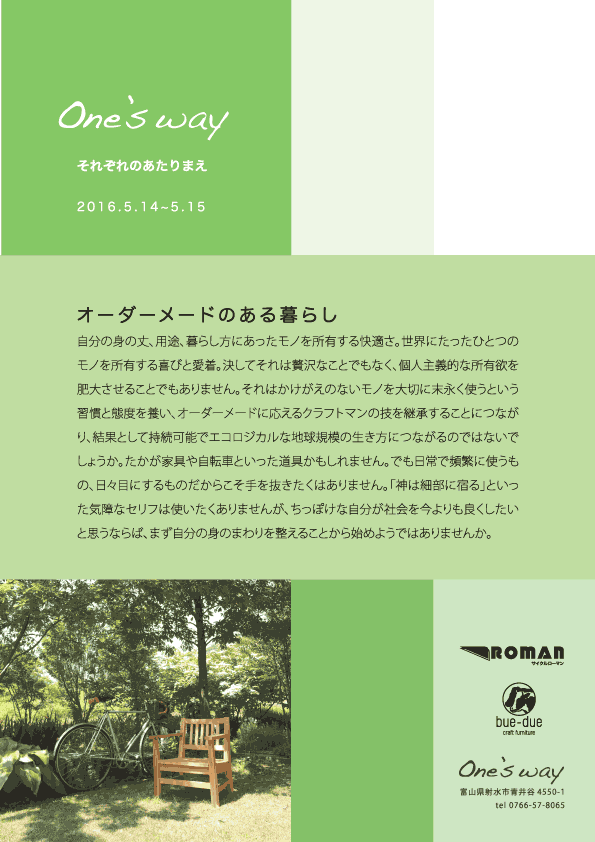
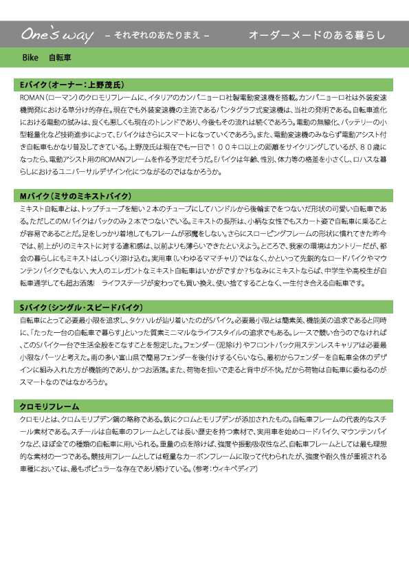
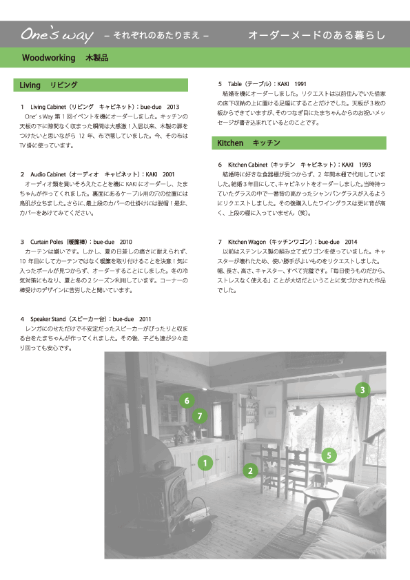
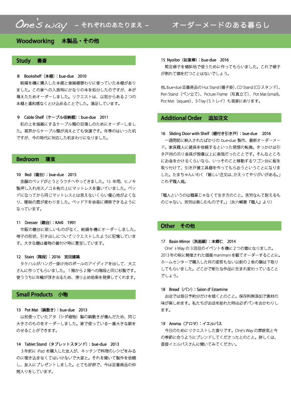
お越しいただいた方に、bue-due製作のストラップをお持ち帰りいただきました。
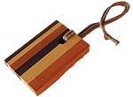
One’s Way –それぞれのあたりまえ–2015秋
13:00～18:00 & 10:00～16:00
濱元丈二さん作の唐津焼とタウの木のアクセサリーをbue-dueさんの什器に展示した中で、エスタミネさんのチョコレートケーキをお供にお茶の時間をお楽しみいただきました。
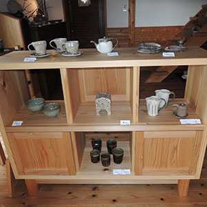
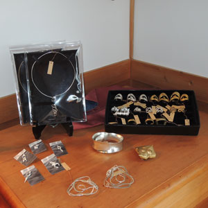
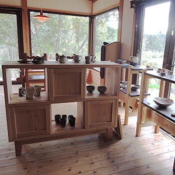
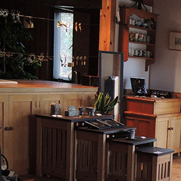
お越しいただいた方に、bue-due製作のプレートをお持ち帰りいただきました。
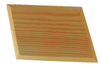
One’s Way –それぞれのあたりまえ–2015春
13:00～18:00 & 10:00～16:00
大寺幸八郎商店さんの銅器の粋な小品とbue-dueの家具空間で、エスタミネ特製バニラアイスクリームとお抹茶をお楽しみいただきました。
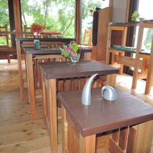
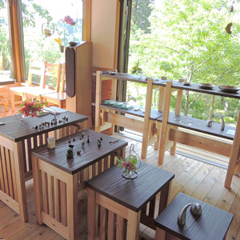
お越しいただいた方に、bue-due製作のプレートをお持ち帰りいただきました。
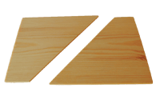
One’s Way –それぞれのあたりまえ–2014秋
13:00～18:00 & 10:00～16:00
bue-dueの家具で茶席をしつらえ、エスタミネのお菓子でお抹茶をお楽しみいただきました。
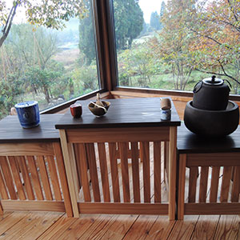
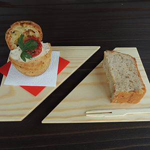
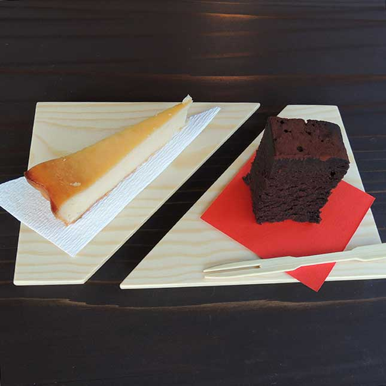
お越しいただいた方に、bue-due製作のプレートをお持ち帰りいただきました。
One’s Way –それぞれのあたりまえ–2014春
13:00～18:00 & 10:00～16:00
bue-dueの家具と本郷仁さんのガラス造形を用いてcafe空間を用意し、齋藤裕二さん手作りのグラスでお茶を楽しんでいただきました。
ガラス造形が新緑の風景を映し出す様を観ることができます。再生ボタンをクリックしてください。
One’s Way –それぞれのあたりまえ–2013秋
イエルバスさんによるアロマテラピー体験、光澤純愼さんによるギター演奏を楽しみました。
One’s Way –それぞれのあたりまえ–2013春
bue-dueの家具とbam chopsの雑貨がエイジングの価値を伝えてくれました。